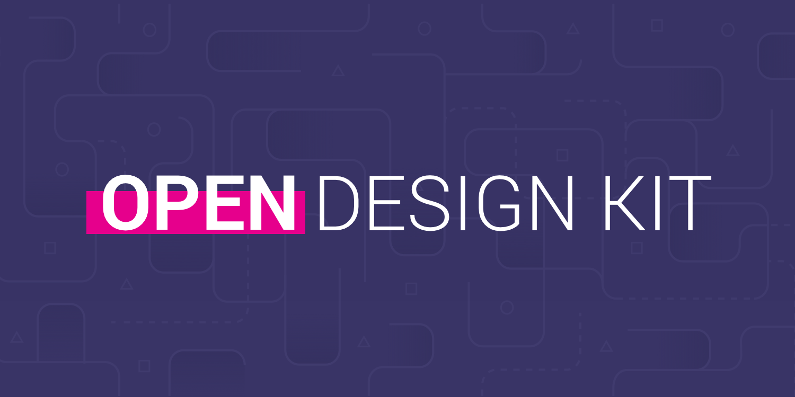
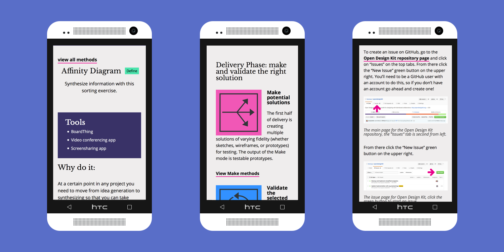

Open Design Kit

Challenge
Working openly with distributed teams can be complicated.
Engagement Strategy
Stage a few interventions with different kinds of teams to try to uncover practices and challenges unique to this specific kind of design.
Design Strategy
Provide tools to practitioners collaborating in distributed environments.
Solution
Create a toolkit of methods (Open Design Kit) so that anyone: practitioners, clients, and collaborators can learn how to be productive and happy in this kind of collaboration. The Kit was designed as an open source project so that any kind of maker can contribute to it.
Process
Open Design Kit was incubated with my colleagues at Bocoup.

Here's a mobile mockup of Open Design Kit method, process, and contribute features.